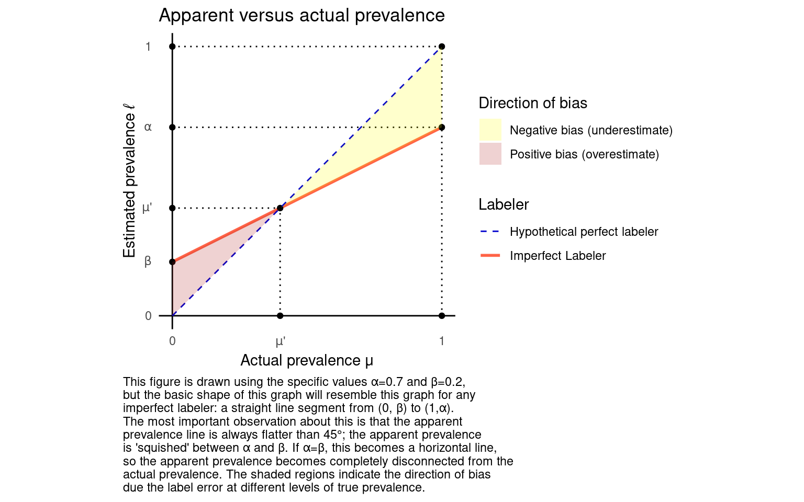

Estimating how many there are of something when labels are sometimes wrong
Say you want to estimate how much there is of some kind of thing. There’s a big set of things, some of which satisfy some property, and others of which don’t, and you want to know what fraction of them have the property. I’ll call this number the prevalence, or just use the letter \(\mu\) to refer to it.
The most straightforward way to do this in theory would be to look at each thing and tally up how many of them have the property, but there are too many of them for this to be feasible, and observing them perfectly is impossible. Instead, you have some imperfect labeler that assigns a label to each object indicating whether it probably has the property. To add some simple notation, \(Y\) be the true value of a randomly selected object, with \(Y=1\) indicating that the object has the property and \(Y=0\) otherwise, and let \(L\) be its label. If \(Y=1\), I’ll call the object an “actual positive”, and if \(L = 1\), I’ll call it an “apparent positive”. The goal is to estimate the true prevalence, the expected value \(\mu = E[Y]\), but you only get to observe \(L\). A natural inclination is to just treat \(L\) as a substitute for \(Y\), and estimate the apparent prevalence \(\ell = E[L]\) by, for example, looking at the sample average of \(L\). This post is about why that goes wrong.
The reason that I’m describing this all so abstractly is that this situation can come up in many different ways. Here are a few examples.
The prevalence \(\mu\) could be the fraction of people in a population who carry some disease. You can’t observe every person in the population, and even if you could, you can’t even know for sure whether any person actually has the disease. All you can know is the outcome of some test. The test is imperfect, and occasionally produces false positives and false negatives. In this case, \(Y\) describes whether a randomly selected person actually has the disease, and \(L\) indicates whether they test positive.
Here’s another example: maybe \(\mu\) is the fraction of examples from some LLM benchmark which contain a hallucination. Such a benchmark might have thousands of prompts, and so it might be infeasible to manually review them all and assess whether they contain hallucinations. To deal with this, many benchmarks of this type use another LLM—ideally one that is more powerful in some sense—to evaluate whether responses generated by the LLM under evaluation contain hallucinations. But this evaluator LLM itself can be error-prone: it can falsely indicate that hallucination-free text contains hallucinations (a false positive), and vice versa (a false negative).
Or perhaps \(\mu\) is the amount of discussion on a microblogging app about The Academy Awards. You can’t look at every single post, so instead you count up how many posts contain the string “Oscar”. Of course, this will falsely count posts discussing Oscar The Grouch (false positives), and it will falsely miss posts which don’t refer to the awards by name at all.
All of these situations are abstractly the same. They all involve trying to estimate some expected value \(E[Y]\) by observing examples of possibly imperfect labels \(L\). Again, the natural inclination is to just use an imperfect label \(L\) like it’s a true value \(Y\). Even if you’re aware that your labels are imperfect, somehow or another the true positives and false positives might cancel out in the end, leading to something which might be noisy but is at least right on average. This does happen with other forms of measurement error. Unfortunately, it doesn’t happen here.
To better understand what does happen, we need two important measures of labeler quality: the true positive rate (TPR) and the false positive rate (FPR). The TPR, which I’ll also denote by \(\alpha\), is the probability that an actual positive is correctly labeled. Using the notation above, it can be written as \(\alpha = P(L=1|Y=1)\). When the labels come from a machine learning model, this quantity is also often called the recall, and when it comes from a medical test, it’s called the sensitivity. The FPR, denoted by \(\beta\), is the probability that an actual negative is falsely identified as an apparent positive: \(\beta = P(L=1|Y=0)\).
These two measures more fully characterize imperfectness of the labeling process. A perfect labeler would have \(\alpha = 1\) and \(\beta = 0\). An imperfect labeler will have \(\alpha < 1\) and \(\beta > 0\). If the labeler is better than flipping a coin, we must have \(\alpha > \beta\). For the most part I’ll assume that this holds, but it will be interesting to think through what happens if it doesn’t.
With these defined, it’s pretty straightforward to see that the apparent prevalence \(E[L]\) can be written as follows.
\[\begin{align*} \ell &= E[L] \\ &= E[L | Y = 1] P (Y = 1) + E[L|Y = 0] P(Y=0) \\ &= \alpha \mu + \beta (1-\mu) \\ & = \beta + (\alpha - \beta) \mu \end{align*}\]
This is an interesting equation. If we have a perfect labeler with \(\alpha = 1\) and \(\beta = 0\), then this says that the estimated prevalence equals the true prevalence, as you’d expect. But otherwise, it’s not. The apparent prevalence ends up differing from the actual prevalence by different amounts depending on \(\mu\), \(\alpha\), and \(\beta\). As a function of \(\mu\), we have a straight line with intercept \(\beta\), and slope \(\alpha - \beta\).
There is a single point, which I’ve labeled \(\mu'\), at which the actual prevalence is equal to the apparent prevalence, but for every other possible value of prevalence, the apparent prevalence differs. The magnitude and even the direction of this bias can take on a range of different values depending on the true prevalence. In a way, this is a bit disappointing news. It means that unless you have perfect labels, you’re virtually guaranteed to estimate prevalence incorrectly.
There are a few other bits of insight that we can obtain by studying this graph. For one thing, the relationship between the true and estimated prevalence is always flatter than the 45 degree line. This means that for small values of the actual prevalence (anywhere to the left of \(\mu'\)), we will tend to overestimate, and vice versa. If you have some sense of the approximate magnitude of the true prevalence, you can use this as a kind of rule of thumb to guess the direction of the bias, even if you don’t know the true and false positive rates for sure. If you’re trying to measure a very small prevalence with an imperfect test, you’re probably overestimating, and vice versa.
It also means that this estimation procedure will tend to understate the magnitude of changes in prevalence: when prevalence changes from \(\mu_0\) to \(\mu_0 + \Delta\), the estimate will change by \((\alpha - \beta)\Delta\), which is strictly less (in absolute value) than \(\Delta\). The apparent prevalence is squished in between \(\alpha\) and \(\beta\). In the extreme case where \(\alpha = \beta\), the line becomes flat, and you’ll end up estimating that prevalence is equal to \(\beta\) on average no matter its true value. This is in some way unsurprising: again, when \(\alpha = \beta\) the labeler is no better than random, so from that perspective it’s no shock that the labels are uninformative about the true prevalence. Nonetheless, I’ve noticed in the real world that this tends to be a bit unintuitive. It’s tempting to think that labeling process with a high false positive rate and a low true positive rate will lead to estimates which are “directionally correct”, but this is not necessarily true! If the false positive rate is close enough to the true positive rate, the estimate becomes pure noise. In the perverse scenario where the false positive rate is higher than the true positive rate, the slope of the line becomes negative, and increases in the true prevalence lead to decreases in the estimated prevalence, and vice versa. You would hope never to find yourself in this scenario, but it’s not impossible, and it’s good to be aware of this possibility.
The fact that changes in prevalence are understated by imperfect labels is quite problematic if your project is to track the prevalence of something over time. If you’re tracking the progress of some disease which currently has a small prevalence, for example, it means that small upticks in the estimated prevalence probably indicate larger increases in the underlying true prevalence.
It also has implications for experimentation. Suppose you are testing some intervention which is intended to change the prevalence. You’ll do this by comparing the prevalence in a test group to the prevalence in a control group. But with imperfect labels, you will underestimate the magnitude of the difference between the two groups.
When the source of the imperfect labels is a machine learning model, the problem of estimating the true prevalence has sometimes been referred to as Quantification—a neglected brother to the classical supervised tasks of Regression and Classification. In this context, the naive approach of estimating \(\ell\) has been called the “Classify And Count” method by Forman (2008), who proposes an alternative method which corrects the bias, appropriately called the “Adjusted Classify-And-Count” (ACC) method. Given \(\alpha\) and \(\beta\), the ACC estimator is obtained by simply solving the equation \(\ell = \beta + (\alpha - \beta) \mu\) for \(\mu\), leading to:
\[\hat \mu_{ACC}=\frac{\ell - \beta}{\alpha - \beta}\] This is not the first time this problem has been noticed. Rogan and Gladen (1978) discuss how the prevalence of diseases can be incorrectly estimated when we rely on imperfect tests, and propose the following correction.
\[\hat \mu _{RG} = \frac{\ell + \text{Specificity} - 1}{\text{Sensitivity} + \text{Specificity} - 1}\] “Specificity” and “sensitivity” are more frequently used to describe medical tests than true and false positive rates, but it turns out this is actually exactly equivalent to the ACC correction. Sensitivity is just a synonym for recall, and the definition of specificity is \(P(L=0 | Y = 0)\), which happens to be equal to \(1 - \beta\). Substituting these in to \(\hat \mu_{RG}\), you get the exact formula for \(\hat \mu _{ACC}\). Funny how things are discovered and rediscovered.
There’s a lot more to talk about here. There are many other methods which are more sophisticated than the Rogan-Gladen correction, and we haven’t even touched on the notion of a confidence interval here. But I’ll leave those for future posts. In this post I just wanted to frame and identify the problem, which I’ve very rarely seen discussed outside of very specialized contexts.
References
Forman G. Quantifying counts and costs via classification. Data Mining and Knowledge Discovery. 2008 Oct;17:164-206.
Rogan WJ, Gladen B. Estimating prevalence from the results of a screening test. American journal of epidemiology. 1978 Jan 1;107(1):71-6.